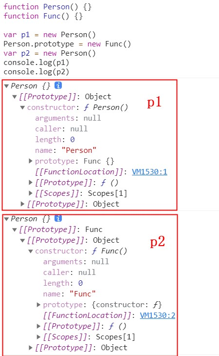
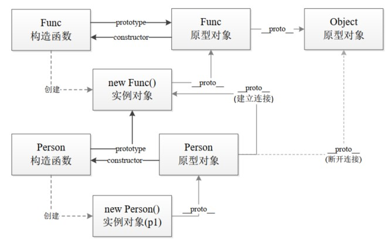

基础系列-this和对象原型
this
this 实际上是在函数被调用时发生的绑定，它指向什么完全取决于函数在哪里被调用。
调用位置：函数在代码中被调用的位置。
当一个函数被调用时，会创建一个活动记录（执行上下文）。这个记录会包含函数在哪里被调用（调用栈）、函数的调用方式、传入的参数等信息。this就是这个记录的一个属性，会在函数执行的过程中用到。
找到this的绑定，最重要的是要分析调用栈（就是为了到达当前执行位置所调用的所有函数）。
绑定规则
默认绑定。独立函数调用。
隐式绑定。
当函数引用有上下文对象时，隐式绑定规则会把函数调用中的this绑定到这个上下文对象。
参数传递也是一种隐式赋值，因此当函数作为参数传入时也会被隐式赋值。
调用回调函数的函数可能会修改this。
常见问题：
class Test { getResult() { let { getThis } = this getThis() // this: undefined // 强制绑定this getThis = getThis.bind(this) getThis() // this: Test // 直接调用对象上的函数 this.getThis() // this: Test // 调用的发起者会进行隐式绑定，如果将函数赋值到变量上，this就会隐式绑定到当前的调用环境上，而造成this丢失 // 验证 const test2 = new Test2() test2.getThis = this.getThis test2.getThis() // this: Test2 } getThis() { console.log('this: ', this) } } class Test2 {} const test = new Test() test.getResult()显式绑定。
使用
call(...)和apply(...)方法进行this绑定。硬绑定：是一种显式的强制绑定。应用场景：①创建一个包裹函数，负责接收参数并返回值。②创建一个可以重复使用的辅助函数。相同原理：
bind(...)方法。bind(…)会返回一个硬编码的新函数，它会把你指定的参数设置为this的上下文并调用原始函数。
// 强绑定第一种情况，创建一个包裹函数，负责接收参数并返回值。 function foo(something) { console.log(this.a, something); return this.a + something; } var obj = { a: 2 }; var bar = function() { // 包裹函数 return foo.apply(obj, arguments); }; var b = bar(3); // 2 3 console.log(b); // 5 // 强绑定第二种情况，创建一个可以重复使用的辅助函数。 function foo(something) { console.log(this.a, something); return this.a + something; } function bind(fn, obj) { // 简单的辅助绑定函数 return function() { return fn.apply(obj, arguments); }; } var obj = { a: 2 }; var bar = bind(foo, obj); var b = bar(3); // 2 3 console.log(b); // 5 // 使用Function.prototype.bind function foo(something) { console.log(this.a, something); return this.a + something; } var obj = { a: 2 }; var bar = foo.bind(obj); var b = bar(3); console.log(b); // 5 // api调用的上下文 function foo(el) { console.log(el, this.id) } var obj = { id: 'awesome' } var arr = [1, 2, 3] arr.forEach(foo, obj);new绑定使用
new来调用foo(...)时，会构造一个新对象并把它绑定到foo(...)调用中的this上。使用
new来调用函数，或者说发生构造函数调用时，会自动执行下面的操作：- 创建（构造）一个全新的对象。
- 这个新对象会被执行[[
Prototype]]连接。 - 这个新对象会绑定到函数调用的
this。 - 如果函数没有返回其他对象，那么
new表达式中的函数调用会自动返回这个新对象。
function Foo() { console.log(this instanceof Foo) // true } new Foo()
无视this绑定规则
箭头函数是根据外层（函数或全局）作用域来决定this。和self = this机制一样，使用词法作用域。箭头函数最常用于回调函数中，例如事件处理器或定时器。
外层作用域：绑定定义时所在的作用域，而不是指向运行时所在的作用域。
箭头函数有几个使用注意点：
（1）函数体内的
this对象，就是定义时所在的对象，而不是使用时所在的对象。（2）不可以当作构造函数，也就是说，不可以使用
new命令，否则会抛出一个错误。（3）不可以使用
arguments对象，该对象在函数体内不存在。如果要用，可以用 rest 参数代替。（4）不可以使用
yield命令，因此箭头函数不能用作 Generator 函数。
bind 强绑定
bind区别于call和apply的特点：
一个绑定函数也能使用new操作符创建对象：这种行为就像把原函数当成构造器。提供的 this 值被忽略，同时调用时的参数被提供给模拟函数。即当 bind 返回的函数作为构造函数的时候，bind 时指定的 this 值会失效，但传入的参数依然生效。
bind方法与call / apply最大的不同就是前者返回一个绑定上下文的函数，而后两者是直接执行了函数。
语法：fun.bind(thisArg[, arg1[, arg2[, ...]]])
// https://github.com/mqyqingfeng/Blog/issues/12
// 第一版
Function.prototype.bind = function (context) {
var self = this;
return function () {
return self.apply(context);
}
}
// 第二版 传参
Function.prototype.bind = function(context) {
var self = this
var args = Array.prototype.slice.call(arguments, 1) // 获取context后面的传参
return function() {
var bindArg = Array.prototype.slice.call(arguments)
return self.apply(context, args.concat(bindArg))
}
}
// 构造函数效果的模拟实现 MDN
Function.prototype.bind = function(context) {
if (typeof this !== 'function') {
throw new Error('Function.prototype.bind - what is trying to be bound is not callable')
}
var self = this
var args = Array.prototype.slice.call(arguments, 1)
var fNOP = function() {}
var fBound = function() {
var bindArgs = Array.prototype.slice.call(arguments)
// 当作为构造函数时，this 指向实例，此时结果为 true，将绑定函数的 this 指向该实例，可以让实例获得来自绑定函数的值
// 以上面的是 demo 为例，如果改成 `this instanceof fBound ? null : context`，实例只是一个空对象，将 null 改成 this ，实例会具有 habit 属性
// 当作为普通函数时，this 指向 window，此时结果为 false，将绑定函数的 this 指向 context
return self.apply(this instanceof fNOP ? this : context, args.concat(bindArgs))
}
// 修改返回函数的 prototype 为绑定函数的 prototype，实例就可以继承绑定函数的原型中的值
fNOP.prototype = this.prototype
fBound.prototype = new fNOP() // 避免修改fBound.prototype而改到this.prototype所以用一个函数做中转
return fBound
}// 《你不知道的js：this 与对象原型第二章》
Function.prototype.bind = function (fn, obj) {
return function () {
return fn.apply(obj, arguments);
}
}bind 实现更多阅读：
new 操作符
new 操作符创建一个用户定义的对象类型的实例或具有构造函数的内置对象类型。
new 会调用类（class）上的构造函数会返回一个对象（也就是类的一个实例）。
// 模拟new
function objectFactory() {
var obj = new Object(), Constructor = [].shift.call(arguments); // 取出第一个参数，就是我们要传入的构造函数。此外因为 shift 会修改原数组，所以 arguments 会被去除第一个参数
obj.__proto__ = Constructor.prototype; // 将 obj 的原型指向构造函数，这样 obj 就可以访问到构造函数原型中的属性
var ret = Constructor.apply(obj, arguments); // 使用 apply，改变构造函数 this 的指向到新建的对象，这样 obj 就可以访问到构造函数中的属性
return typeof ret === 'object' ? ret || obj : obj;
}类构造函数属于类， 而且通常和类同名。 此外， 构造函数大多需要用 new 来调， 这样语言引擎才知道你想要构造一个新的类实例。
当使用 new 操作符创建实例时，会调用构造函数执行以下操作：
- 在内存中创建一个新的对象。
- 这个新对象内部的 [[Prototype]] 特性被复制为构造函数的 prototype 属性。
- 构造函数内部的 this 被赋值为这个新对象（即 this 指向新对象）。
- 执行构造函数内部的代码（给新对象添加属性）。
- 如果构造函数返回非空对象，则返回该对象；否则，返回刚创建的新对象。
和 new 绑定的操作一样，主要是关注点不同。
构造函数
首先重新定义一下 JavaScript 中的“构造函数”。
在 JavaScript 中， 构造函数只是一些使用 new 操作符时被调用的函数。 它们并不会属于某个类， 也不会实例化一个类。 实际上，它们甚至都不能说是一种特殊的函数类型， 它们只是被 new 操作符调用的普通函数而已 。
实际上并不存在所谓的“构造函数”， 只有对于函数的“构造调用”。
与 普通函数 的区别
唯一区别就是调用方式不同。任何函数只要使用 new 操作符调用就是构造函数，而不使用 new 操作符调用的函数就是普通函数。
构造函数的问题
构造函数定义的方法会在每个实例上都创建一遍。
创建了两个相同类的实例，但是实例中的方法指向不是同一个 Function 实例。
原型 Prototype
Prototype
每个函数都会创建一个 prototype 属性，这个属性是一个对象，包含应该由特定引用类型的实例共享的属性和方法。
这个对象（prototype）就是通过调用构造函数创建的对象的原型，所以 函数的 prototype 属性指向其原型对象。
默认情况下，所有原型对象都有 constructor 属性，指回之前关联的构造函数( Fun.prototype.constructor === Fun )。
每次调用构造函数创建一个新实例，这个实例的内部 [[Prototype]] 指针就会被赋值为构造函数的原型对象（prototype 对象）。
脚本中没有访问这个 [[Prototype]] 特性的标准方式， 但 Firefox、Safari 和 Chrome 会在每个对象上暴露
__proto__属性，通过这个属性可以访问对象的原型。5条原型规则：
- 所有的引用类型（数组、对象、函数），都具有对象特性，即可自由扩展属性（除了 null）以外
- 所有的引用类型（数组、对象、函数），都有一个
__proto__（隐式原型）属性，属性值是一个普通的对象- 所有的函数，都有一个 prototype （显式原型）属性，属性值也是一个普通的对象
- 所有的引用类型（数组、对象、函数），
__proto__属性值指向它的构造函数的 prototype 属性值- 当试图得到一个对象（引用类型）的某个属性时，如果这个对象本身没有这个属性，那么会去它的
__proto__（即它的构造函数的 prototype）中寻找
实例与原型对象之间有直接的联系，但实例与构造函数之间没有。

const obj = {}
console.log(obj.prototype) // undefined 实例没有prototype属性
const Fun = function() {}
const fun = new Fun() // 创建实例
console.log(fun.__proto__ === Fun.prototype) // true
console.log(Fun.prototype.constructor === Fun) // true
console.log(fun.__proto__.constructor === Fun) // true
console.log(fun.constructor === Fun) // true
console.log(fun.__proto__.constructor === Fun.prototype.constructor) // true
console.log(Fun.prototype, Fun.prototype instanceof Fun, Fun.prototype instanceof Object)
// {} false true
console.log(Fun.constructor, Fun.prototype.constructor)
// [Function: Function] [Function: Fun]
console.log(fun.prototype, fun.constructor, fun instanceof Fun)
// undefined [Function: Fun] true
console.log(Fun.prototype.constructor === fun.constructor)
// true每次调用构造函数创建一个新实例，这个实例的内部 [[Prototype]] 指针就会被赋值为构造函数的原型对象。
实例与构造函数原型之间有直接的联系，但实例与构造函数之间没有。
正常的原型链都会终止于 Object 的原型对象
Object 原型的原型是 null
使用原型对象的好处：在原型上定义的属性和方法可以被对象实例共享。在构造函数中直接赋给对象实例的值，可以直接赋值给它们的原型 。
function Foo() {}
Foo.prototype.sayHello = function() {
console.log('hello')
}
const foo = new Foo()
foo.sayHello()Prototype 与 __proto__ 的关系
构造函数、原型、实例的关系：每个构造函数都有一个原型对象，原型有一个属性指回构造函数，而实例有一个内部指针指向原型。
每个对象都有显示原型 prototype ，实例没有 prototype 属性，但有 [[Prototype]] 指针即利用
__proto__属性暴露。每个实例都有隐式原型
__proto__(浏览器特有的，node（看版本）环境下没有)实例的
__proto__指向对应 class 的 prototype 原型对象，即parent.__proto__ = Parent.prototype实例与构造函数没有直接联系，与原型对象有直接联系，构造函数通过 prototype 属性链接到原型对象，即
parent.__proto__.constructor = ParentSon.prototype.__proto__ = Parent.prototype，Parent.prototype.__proto__ = null，Son.prototype.__proto__.__proto__ = nullSon.prototype.__proto__.construct = Parentson1.__proto__ = son2.__proto__
Object 原型链方法
isPrototypeOf
不是所有实现都对外暴露了 prototype 属性，isPrototypeOf 可以确定两个对象之间的关系。
Person.prototype.isPrototypeOf(person1) // true 实例中有链接指向原型对象Object.getPrototypeOf()
返回参数的内部特性 [[Prototype]] 的值。
console.log(Object.getPrototypeOf(person1) == Person.prototype); // true
console.log(Object.getPrototypeOf(person1).name); // "Nicholas"Object.setPrototypeOf()
可以向实例的私有特性 Prototype 写入一个新值，重写一个对象的原型继承关系。
但是会带来严重的性能问题，会涉及所有访问了那些修改过 Prototype 的对象代码。
可以使用 Object.create() 创建对象时指定新的原型
// ============================ Object.setPrototypeOf ==============================
let biped = {
numLegs: 2
};
let person = {
name: 'Matt'
};
Object.setPrototypeOf(person, biped);
console.log(person.name); // Matt
console.log(person.numLegs); // 2
console.log(Object.getPrototypeOf(person) === biped); // true
// ============================ Object.create =================================
const biped = {
numLegs: 2
};
let person = Object.create(biped);
person.name = 'Matt';
console.log(person.name); // Matt
console.log(person.numLegs); // 2
console.log(Object.getPrototypeOf(person) === biped); // trueObject.hasOwnProperty()
hasOwnProperty()方法用于确定某个属性是在实例上还是在原型对象上。实例上返回 true，其他情况返回 false。
使用 in 操作符，则是从实例和原型对象上进行查找。
在 for-in 循环中使用 in 操作符时，可以通过对象访问且可以被枚举的属性都会返回，包括实例属性和原型属性。遮蔽原型中不可枚举（ [[Enumerable]]特性被设置为 false）属性的实例属性也会在 for-in 循环中返回，因为默认情况下开发者定义的属性都是可枚举的。
instanceof 运算符
用于检测构造函数的 prototype 属性是否出现在某个实例对象的原型链上。
// 定义构造函数
function C(){}
function D(){}
var o = new C();
o instanceof C; // true，因为 Object.getPrototypeOf(o) === C.prototype
o instanceof D; // false，因为 D.prototype 不在 o 的原型链上
o instanceof Object; // true，因为 Object.prototype.isPrototypeOf(o) 返回 true
C.prototype instanceof Object // true，同上
C.prototype = {};
var o2 = new C();
o2 instanceof C; // true
o instanceof C; // false，C.prototype 指向了一个空对象,这个空对象不在 o 的原型链上.
D.prototype = new C(); // 继承
var o3 = new D();
o3 instanceof D; // true
o3 instanceof C; // true 因为 C.prototype 现在在 o3 的原型链上手写 instanceof
function myInstanceof(left, right) {
var prototype = right.prototype;
left = left.__proto__;
while (true) {
if (left === null || left === undefined) return false;
if (left === prototype) return true;
left = left.__proto__;
}
}
console.log(myInstanceof(o1, M)); // true
console.log(myInstanceof(o1, Object)); // true
console.log(myInstanceof([1, 2], Array)); // true
console.log(myInstanceof({ a: 1 }, Array)); // false
- 首先获取右边参数 类型的显式原型
- 然后获得左边参数 对象的隐式原型
- 然后一直循环判断 对象的隐式原型 是否等于 类型的显式原型，直到 对象的隐式原型为 null，因为原型链最终为 null
注意
- 函数声明之后，构造函数就有了一个与之关联的原型对象。
- 构造函数有一个 prototype 属性引用其原型对象，而这个原型对象也有一个 constructor 属性，引用这个构造函数，两者循环引用。
- 正常的原型链都会终止于 Object 的原型对象，Object 原型的原型是 null。（
Object.__proto__ = null） - 构造函数、原型对象和实例是3个完全不同的对象。
- 同一个构造函数创建的两个实例共享同一个原型对象。
- instanceof 检查实例的原型链中是否包含指定构造函数的原型。

原型链的操作
function Foo() {
console.log(this instanceof Foo, this)
}
// new Foo()
Foo.prototype.extends = function() {
console.log('prototype', this, this instanceof Foo)
}
Foo.extends = function() { // 原型链继承方式无法进行继承
console.log('static', this, this instanceof Foo)
}
Foo.extends() // 运行的是Foo.extends this指向function Foo
Foo() // this指向global
var foo = new Foo() // this指向Foo {}
foo.extends() // 运行的是Foo.prototype.extends
console.log(Object.create(Foo)) // Function {}
console.log(Object.create(Foo.prototype)) // Foo {}
var bar = Object.create(Foo.prototype)
bar.extends() // prototype Foo {} true
function Baz() {}
Baz.prototype = Object.create(Foo.prototype)
// Baz.prototype.constructor = Baz
console.log(Baz)
Baz.prototype.extends() // prototype Foo {} true
var baz = new Baz()
console.log(baz.extends === Baz.prototype.extends) // true
// Baz.extends() // error
console.log(Baz.prototype.constructor === Foo.prototype.constructor, baz.constructor === Foo) // true true Baz继承于Foo 则构造器指向也会改变
Baz.prototype.constructor = Baz // 修改构造器方法指向
console.log(Baz.prototype.constructor === Foo.prototype.constructor, baz.constructor === Baz) // false true
// ========================================================
// instanceof 运算符
function Person() {}
function Func() {}
const p1 = new Person()
Person.prototype = new Func() // 原型链继承 修改原型对象指向
const p2 = new Person()
console.log(p1 instanceof Person, p1 instanceof Func) // false false
console.log(p2 instanceof Person, p2 instanceof Func) // true true
p1.__proto__.__proto__ = Person.prototype // 修改原型链继承关系
console.log(p1 instanceof Person, p1 instanceof Func) // true true
继承
继承：在使用原型实现继承时，原型实际上变成了另一个类型的实例。
关联两个对象最常用的方式是使用 new 关键词进行函数调用，在调用中会创建一个关联其他对象的新对象。
使用 new 调用函数时会把新对象的 .prototype 属性关联到 “其他对象”。
原型链
原型链：原型本身有一个内部指针指向另一个原型，相应的另一个原型也有一个指针指向另一个构造函数。这样就在实例和原型之间构造了一条原型链。
ECMA-262 把原型链定义为 ECMAScript 的主要继承方式。其基本思想就是通过原型继承多个引用类型的属性和方法。
构造函数、原型和实例的关系：每个构造函数都有一个原型对象，原型有一个属性指回构造函数，而实例有一个内部指针指向原型。
function SuperType() {
this.property = true;
}
SuperType.prototype.getSuperValue = function() {
return this.property;
};
function SubType() {
this.subproperty = false;
}
// 继承 SuperType
SubType.prototype = new SuperType(); // 重写了 SubType 最初的原型 实现继承
SubType.prototype.getSubValue = function () {
return this.subproperty;
};
let instance = new SubType();
console.log(instance.getSuperValue()); // true
缺点
以对象字面量方式创建原型方法会破坏之前的原型链，因为这相当于重写了原型链。
// 继承 SuperType SubType.prototype = new SuperType(); // 通过对象字面量添加新方法，这会导致上一行无效 SubType.prototype = { getSubValue() { return this.subproperty; }, someOtherMethod() { return false; } }; let instance = new SubType(); console.log(instance.getSuperValue()); // 出错！原型中包含引用值时，会在所有实例间共享。在使用原型实现继承时，原型实际上变成了另一个类型的实例。这意味着原先的实例属性变成为了原型属性。
function SuperType() { this.colors = ["red", "blue", "green"]; } function SubType() {} // 继承 SuperType SubType.prototype = new SuperType(); let instance1 = new SubType(); instance1.colors.push("black"); console.log(instance1.colors); // "red,blue,green,black" let instance2 = new SubType(); console.log(instance2.colors); // "red,blue,green,black"子类行在实例化时不能给父类型的构造函数传参。
盗用构造函数
也称作“对象伪装”或“经典继承”。
在子类构造函数中调用父类构造函数。
function SuperType() {
this.colors = ["red", "blue", "green"];
}
function SubType() {
// 继承 SuperType 可以使用 apply() 和 call()方法以新创建的对象为上下文执行构造函数
SuperType.call(this);
}
let instance1 = new SubType();
instance1.colors.push("black");
console.log(instance1.colors); // "red,blue,green,black"
let instance2 = new SubType();
console.log(instance2.colors); // "red,blue,green"优点
可以在子类构造函数中向父类构造函数传参。
缺点
同使用构造函数模式自定义类型的问题：必须在构造函数中定义方法，因此函数不能重用。
此外子类不能访问父类原型上定义的方法，因此所有类型只能使用构造函数模式。
function SuperType(name) {
this.name = name || '';
this.sayHello = function() {
console.log('Hello');
}
}
SuperType.prototype.sayBye = function() {
console.log('Bye')
}
function SubType(name) {
SuperType.call(this, name);
}
let instance1 = new SubType('instance1');
console.log(instance1.name); // instance1
instance1.sayHello(); // Hello
instance1.sayBye(); // 报错组合继承
也称作“伪经典继承”，综合了原型链和盗用构造函数，将两者的优点集中起来。
基本思路：使用原型链继承原型上的属性和方法，而通过盗用构造函数继承实例属性。
function SuperType(name){
this.name = name;
this.colors = ["red", "blue", "green"];
this.sayHello = function() {
console.log('instance Hello');
}
}
SuperType.prototype.sayHello = function() {
console.log('prototype Hello')
}
SuperType.prototype.sayName = function() {
console.log(this.name);
};
function SubType(name, age){
// 调用父类构造函数 继承属性 盗用构造函数 继承实例上的属性和方法
SuperType.call(this, name);
this.age = age;
}
// 调用父类构造函数 继承方法 原型链方式 继承原型上的方法和属性
SubType.prototype = new SuperType();
SubType.prototype.sayAge = function() {
console.log(this.age);
};
let instance1 = new SubType("Nicholas", 29);
instance1.colors.push("black");
console.log(instance1.colors); // "red,blue,green,black"
instance1.sayName(); // "Nicholas";
instance1.sayAge(); // 29
instance1.sayHello(); // instance Hello
instance1.__proto__.sayHello() // instance Hello
SubType.prototype.sayHello() // instance Hello
let instance2 = new SubType("Greg", 27);
console.log(instance2.colors); // "red,blue,green"
instance2.sayName(); // "Greg";
instance2.sayAge(); // 27会调用两次父类构造函数。一次在是创建子类原型时调用，另一次是在子类构造函数中调用。


原型式继承
即使不自定义类型也可以通过原型实现对象之间的信息共享。
在原有的对象上再创建一个新对象。
可以使用 Object.create() ，接收两个参数：作为新对象原型的对象，以及给新对象定义额外属性的对象（第二个可选）。
Object.create() 的第二个参数与 Object.defineProperties() 的第二个参数一样：每个新增属性都通过各自的描述符来描述。以这种方式添加的属性会遮蔽原型对象上的同名属性。
let person = {
name: "Nicholas",
friends: ["Shelby", "Court", "Van"]
};
let anotherPerson = Object.create(person);
anotherPerson.name = "Greg";
anotherPerson.friends.push("Rob");
let yetAnotherPerson = Object.create(person);
yetAnotherPerson.name = "Linda";
yetAnotherPerson.friends.push("Barbie");
console.log(person.friends); // "Shelby,Court,Van,Rob,Barbie"原型式继承非常适合不需要单独创建构造函数，但仍然需要在对象间共享信息的场合。
但要记住，属性中包含的引用值始终会在相关对象间共享，跟使用原型（Prototype）模式是一样的。
寄生式继承
类似于寄生构造函数和工厂模式：创建一个实现继承的函数，以某种方式增强对象，然后返回这个对象。
通过寄生式继承给对象添加函数会导致函数难以重用，与构造函数模式类似。
function createAnother(original) {
let clone = Object.create(original) // 通过调用函数创建一个新对象 或 其他返回新对象的函数 如object(original)
clone.sayHi = function() { // 以某种方式增强这个对象
console.log("hi");
};
return clone; // 返回这个对象
}寄生式继承适合主要关注对象，而不在乎类型和构造函数的场景。
寄生式组合继承
通过盗用构造函数继承属性，但使用混合式原型链继承方法。
基本思路：不通过调用父类构造函数给子类原型赋值，而是取得父类原型的一个副本。即使用寄生式继承来继承父类原型，然后将返回的新对象复制给子类原型。
function inheritPrototype(subType, superType) {
let prototype = Object.create(superType.prototype); // 创建对象
prototype.constructor = subType; // 增强对象 解决重写原型导致默认 constructor 丢失的问题
subType.prototype = prototype; // 赋值对象
}
// ============================= 使用 =============================
function SuperType(name) {
this.name = name;
this.colors = ["red", "blue", "green"];
}
SuperType.prototype.sayName = function() {
console.log(this.name);
};
function SubType(name, age) {
SuperType.call(this, name);
this.age = age;
}
inheritPrototype(SubType, SuperType); // 使用
SubType.prototype.sayAge = function() {
console.log(this.age);
};只调用了一次 SuperType 构造函数，避免了 SubType.prototype 上不必要也用不到的属性
寄生式组合继承可以算是引用类型继承的最佳模式。
参考文章
《你不知道的js(上) – 第二部分》
《JavaScript高级程序设计（第四版）》第8章